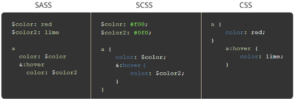

What is Sass?
Sass - Syntactically Awesome Style Sheets - is a open-source preprocessor scripting language that is either interpreted or compiled into Cascading Style Sheets (CSS). While Sass is a pre-compiler, SassScript is the scripting language. Sass is an extension to Vanilla CSS, and fully compatible with all versions of CSS. It was designed by Hampton Catlin and developed by Natalie Weizenbaum in 2006. Before you learn this language, you should at least have a basic understanding of HTML and CSS though.
How to use Sass?
As mentioned, unless Sass is compiled into Vanilla CSS, a browser cannot read it. There are several ways of compiling this language, but three of them are by far the most popular and efficient.
- 1. Using NPM(Node Package Manager); you first download the Node JS application from NodeJS.org . It is complicated enough for most beginners, so watch this youtube video.
- 2. By installing 'Koala GUI App'. It is a visual application, so it is really easy to compile Sass with this app. Download it at koala-app.com
- 3. If you are using VS Code, I definitely recommend using its extension named Live Sass Compiler by Retwick Dey, who is also a developer of Live Server. I personally create Sass projects with it, so I guarantee this extension is worth using.
Its Syntax
Sass pre-compiler is divided into two types of file extensions in terms of its syntax: style.sass and style.scss . The former uses indentation to write code blocks like Python, whereas the latter looks similar to CSS and uses curly brackets and semi-colons(That's why its full name is SassyCSS!). Both may be best for different developers depending on their preferance for indents or brackets. However, their functionality is the same.
 Differnce between .sass, .scss, and .cssWhere to Learn Sass?
The full documentation of this language can be found at sass-lang.com. There you can get a grasp of this superpower. Additional youtube videos are really useful: Sass Crash Course by codeSTACKr and Sass Crash Course by Traversy Media